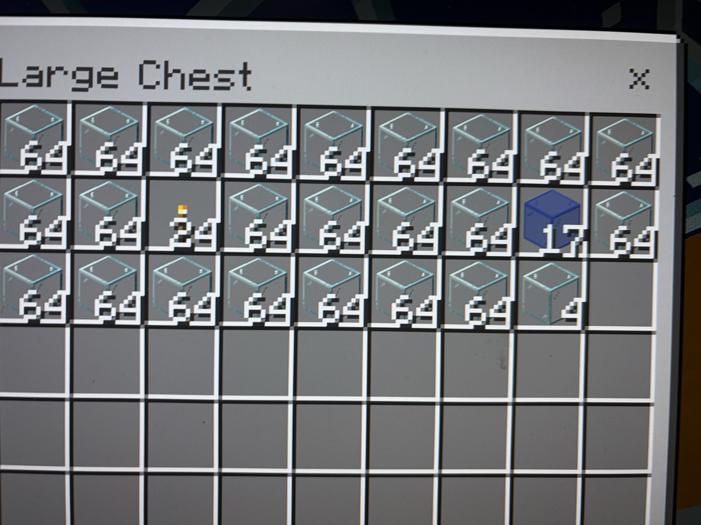
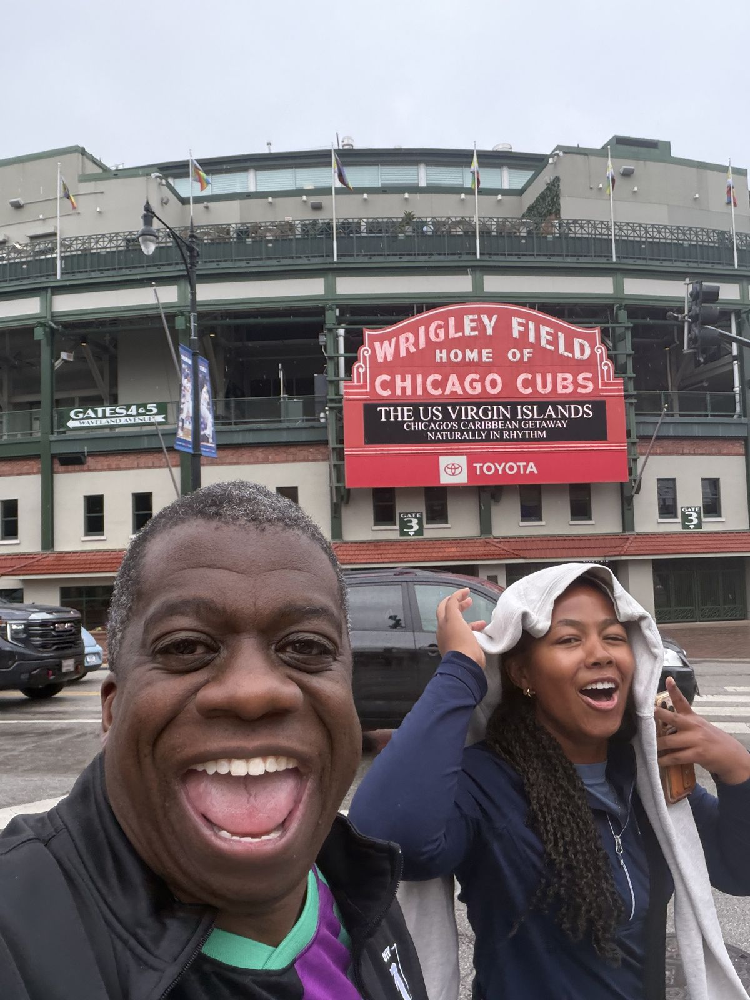
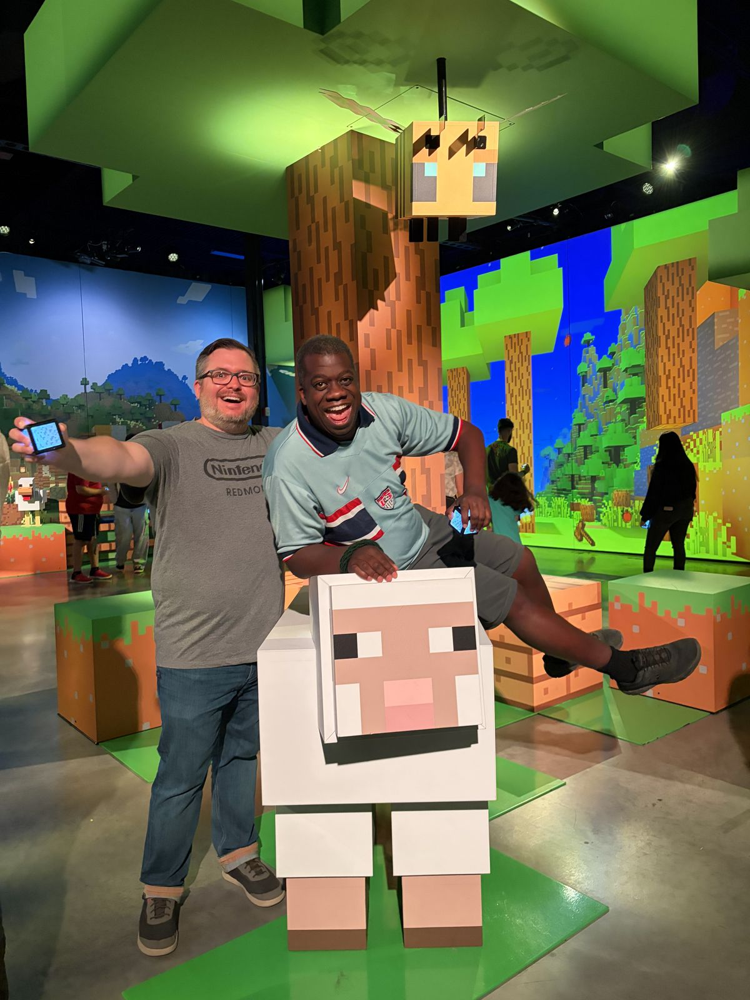
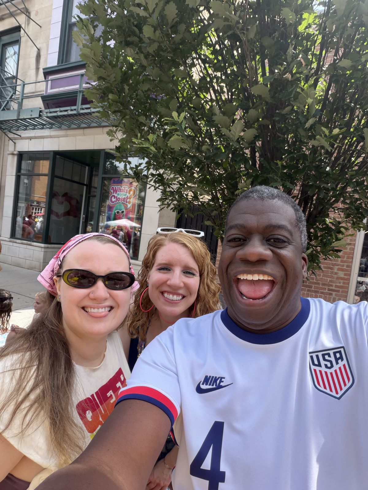
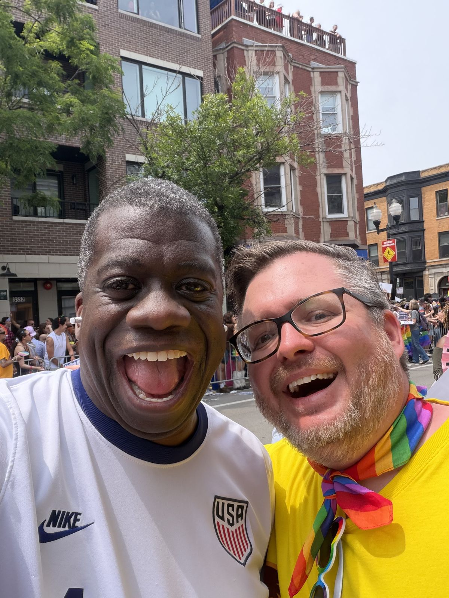
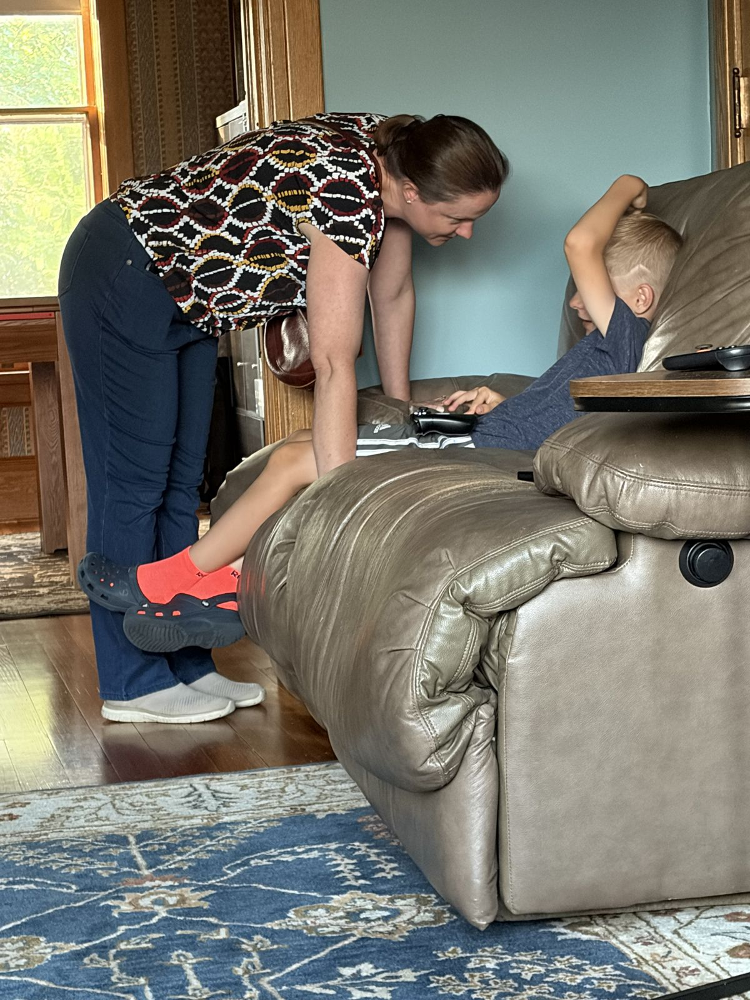
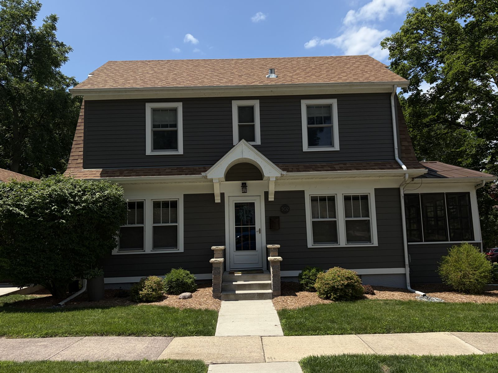
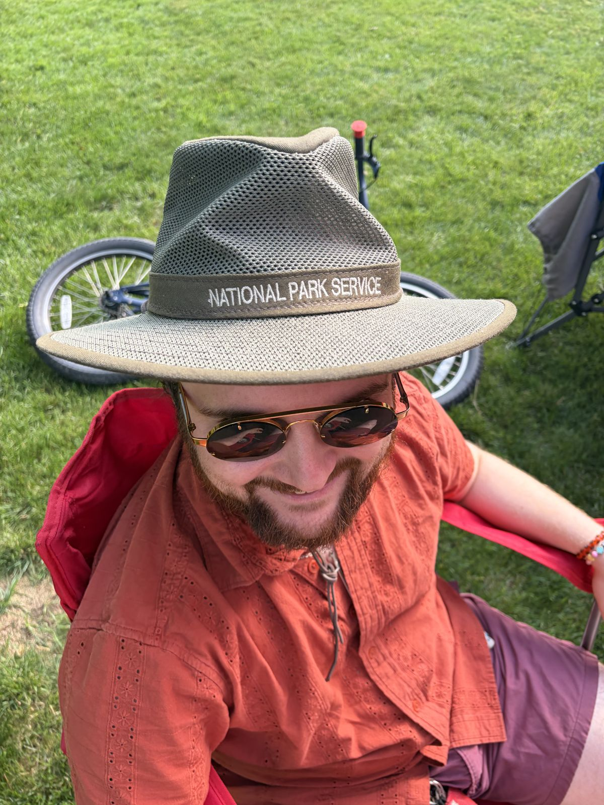
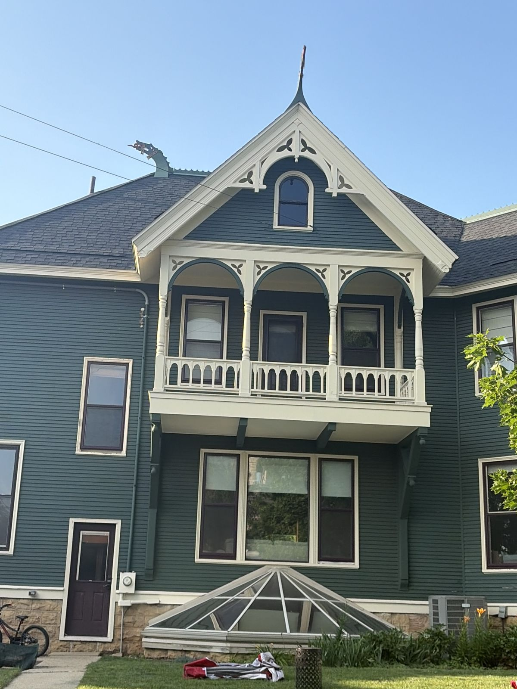

Eleven days, three worlds
The city half
- Fri Jun 26 · dawnUA 580, LAX to O'Hare, Palmer House Hilton.The Francksens drove down to meet you. That afternoon, your niece Erica took you to lunch: "i am with her right now." Werten's daughter, starting her family-therapy program at Northwestern, and by dinner she had her own bespoke site and a place in the story.
- Fri Jun 26 · 7:30pmYour first opera, invited by Eugene Jarvis."i've never been to the opera, I am curious too." La Bohème, Opera Festival of Chicago, out in Skokie. The man who made Defender took you to hear Puccini, and you said yes the same morning he asked.
- Sat Jun 27Pokémon Fossil Museum at the Field, Minecraft Experience in Rosemont, dinner in Northalsted.A day built for the boys and the kid in you. Buckingham Fountain went by the car window and you caught it (it is the hero photo above).
- Sun Jun 28 · 11amThe 55th Chicago Pride Parade. "Free to Be Proud."Eric's first Pride, at your side. You told me later that June 28 is the day you hold closest of all this year. And you remembered Steve Russell: back in Chicago for Pride "for the first time since he took me to the Chicago Pride parade years ago."
The kitchen-table half
- Mon Jun 29 · 2:42am"good morning from Wisconsin"And then, five minutes later, the sentence that reframed your summer: "I feel stuck... I'm solving for GGP or USC or to gift others but am not investing in myself." The invest-in-yourself pivot was born at Eric's kitchen table before sunrise.
- Tue Jun 30Dragon House Fireside prep for Hasbro, built poolside.Also quoting Joe's fence project from two time zones away. The second shift never fully stops, but this week it ran on Wisconsin time.
- Thu Jul 2 · 4:40amThe Vanderbilt SMPY call: "I've been in your study since I was 12 years old."The same pre-dawn hour you told me about Richard Gordon, the Georgetown law professor you are named for, and the fact you learned later in life: he was gay too. Family history surfacing at 3am in a quiet farmhouse.
- Sat Jul 4Dragon House BBQ, Stoughton.Your messages that day were almost silent, and that silence was the point: you were present. Miranda came at your invitation. Uncle G held court.
- Sun Jul 5 · 5:49pm"I need a guide for winning a 3 person game of the finnish board game Eclipse"Minecraft with the boys, a D&D house, then a Finnish 4X board game to close. Three game worlds in ten days, one gamer through all of them.
- Mon Jul 6Madison to O'Hare to home.Last Wisconsin message at 7:10am. Wiscago, complete.
What survived the wire
Your camera roll opened its doors. Wrigley with Erica, the parade with Eric, the Fourth at the Dragon House. Tap any photo to go full screen.










June 28, still moving
Your favorite frame of the year, gently brought to life: the smiles hold, the light flickers, the flags drift. Some moments refuse to be still.
Two ways of being on a trip
Messages you sent me during each wedding-adjacent week. The numbers are a portrait: Winnipeg you lived it, Wiscago you built through it.
Three things you were too busy living to notice
Winnipeg was 125 messages. Wiscago was 696.
In Winnipeg you were phone-light and present. In Wiscago you ran a whole second life through me: eight new people whitelisted from a Wisconsin farmhouse, sites for Erica and Jeff and Steve, Joe's projects quoted remotely. Same person, two completely different modes of loving people.
Every big identity move happened before 5am Central
The invest-in-myself pivot (Jun 29, 2:47am). The Richard Gordon story (Jul 2, 2:59am). The SMPY call prep (Jul 2, 4:40am). Wisconsin quiet gave your brain a channel it does not get in LA, and it used every pre-dawn minute of it.
You diagnosed yourself, and your own message log proves it
"I'm solving... to gift others but am not investing in myself." That same week: Joe's bathroom, Joe's fence, Brennan's intro, Jeff's beer guide, Erica's site, Crystal's World Cup page. Nearly every single ask was a gift for someone else. The sentence was not a feeling. It was data.